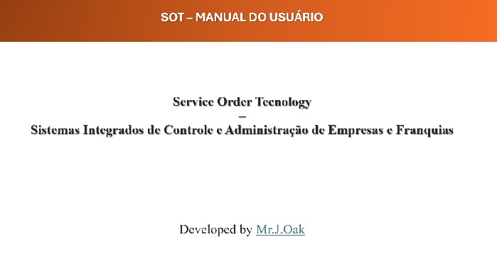

Microsoft Project Online
2021 - 2024
KPG
Atuação de Profissionais Especializados:
Contexto:
O sistema KPG da Klabin, que conta com a expertise de nossa equipe especializada, desempenha um papel crucial no gerenciamento eficiente de Paradas de Manutenção na Klabin, uma renomada indústria produtora de papel. Desde sua concepção em 2021, o KPG tem sido a peça fundamental na gestão eficiente de Paradas de Manutenção na Klabin, uma renomada indústria produtora de papel. Atualmente, nossa equipe desempenha um papel fundamental na operacionalização e aprimoramento contínuo do sistema, oferecendo soluções abrangentes para otimizar as operações da Klabin.
Gestão de Cronogramas com Microsoft Project Online:
A utilização do Microsoft Project Online no âmbito do KPG é possível graças à atuação proativa da equipe de profissionais especializados. Eles são responsáveis por criar e personalizar cronogramas no MSProject, publicá-los no Project Online e integrá-los ao KPG para as paradas programadas na Klabin. O suporte oferecido inclui a customização de projetos, a geração de cronogramas previstos e a atribuição de responsabilidades a áreas específicas, subáreas, gestores e operadores. Essa integração eficaz proporciona uma visão holística e em tempo real das atividades planejadas, contribuindo significativamente para o controle e a execução eficiente das paradas. Além disso, nossa equipe oferece treinamento para Planejadores, garantindo a adoção das melhores práticas na construção e utilização de templates de projetos compatíveis com o KPG.
Configuração de Ambiente no Project Online:
Nossa equipe desempenha um papel fundamental na configuração do ambiente no Microsoft Project Online para garantir uma integração perfeita com o KPG. Isso envolve a adaptação das funcionalidades do Project Online às necessidades específicas do KPG, assegurando uma interação mais eficiente com o sistema de gerenciamento de Paradas de Manutenção.
Vantagens da Integração:
- Controle Preciso: A atuação dos profissionais especializados assegura um controle preciso das atividades, permitindo acompanhamento em tempo real.
- Documentação Eficiente: O KPG, ao integrar-se ao Project Online, facilita apontamentos, fotografias, comentários e documentação online ou offline, garantindo uma gestão completa e eficiente.
- Programação Centralizada: Nossa equipe sincroniza o portal com o Project Online, centralizando a programação, gerando cronogramas previstos e responsabilizando áreas, subáreas, gestores e operadores.
- Comando e Controle: A integração, sob a supervisão de nossa equipe, controla todo o fluxo das atividades durante as paradas, informando imediatamente em caso de atrasos.
- Logs e Relatórios: Com nosso suporte, o KPG gera logs e relatórios detalhados, proporcionando um controle preciso alinhado com APIs.
Recomendações:
Recomendamos a adoção conjunta do Microsoft Project Online e KPG para empresas que buscam eficiência operacional, controle preciso e documentação eficaz durante as paradas programadas. Essa integração, impulsionada por nossa equipe especializada, proporciona uma gestão completa e transparente, garantindo o sucesso das atividades de manutenção na indústria.
Conclusão:
A atuação de nossa equipe especializada, aliada às avançadas tecnologias empregadas no KPG e à integração eficaz com o Microsoft Project Online, representa uma revolução no gerenciamento de Paradas de Manutenção na Klabin. Simplificando operações, otimizando paradas e proporcionando eficiência inigualável, o KPG continua a elevar os padrões de excelência na indústria.
Expandir o Texto
Apoio Planejamento em Paradas de Manutenção
2021 - 2024
KPG
Atuação de Profissionais Especializados:
Contexto:
Na colaboração contínua com a Klabin, profissionais especializados têm desempenhado um papel fundamental no desenvolvimento, implementação, suporte e manutenção contínua do KPG desde sua concepção em 2021. Este sistema, que revoluciona o gerenciamento de Paradas de Manutenção, tornou-se uma peça central na programação eficiente de paradas na Klabin, abrangendo diversas plataformas, incluindo web e Android.
Contribuição dos Profissionais:
Eficiência e Controle nas Paradas Programadas: Profissionais especializados estão atualmente executando um papel fundamental na operacionalização do KPG, destacando-se por suas habilidades e expertise. O KPG é uma solução multiplataforma inovadora que simplifica e otimiza as atividades durante as paradas programadas na Klabin. Com um aplicativo para operação, portal de gestão e integração eficaz, o KPG oferece benefícios significativos, destacados por um estudo de caso na indústria de celulose e fabricação de papéis. Suas características distintivas incluem:
Controle Preciso:
Acompanhamento em tempo real das atividades durante as paradas programadas.
Documentação Eficiente:
Apontamentos, fotografias, comentários e documentação online ou offline para uma gestão completa.
Programação Centralizada:
Portal sincronizado que centraliza a programação das paradas, gerando cronogramas previstos e responsabilizando áreas específicas.
Comando e Controle:
Controle total do fluxo de atividades durante as paradas, com alertas imediatos em caso de atrasos.
Logs e Relatórios:
Geração de logs e relatórios detalhados, proporcionando um controle preciso alinhado com APIs.
Contribuição para o Setor:
Em uma indústria conceituada no Brasil, a implementação do KPG durante as paradas programadas resultou em redução significativa do tempo nas atividades de manutenção, aprimorando a comunicação entre operadores e gestores, aumentando a eficiência na troca de peças e componentes, além de proporcionar documentação eficaz para futuras análises e planejamento.
Recomendações:
O KPG, impulsionado pela atuação dos profissionais especializados, se destaca como a solução ideal para o gerenciamento eficiente de Paradas de Manutenção em diversos setores. Recomendamos sua adoção para empresas que realizam paradas programadas, seja para manutenção preventiva, troca de peças, reorganização da linha de produção ou treinamento de funcionários. Seja online ou offline, o KPG proporciona uma gestão completa e transparente, garantindo o sucesso das atividades de manutenção.
Apoio ao Planejamento em Paradas de Manutenção:
Profissionais especializados estão desempenhando um papel crucial na gestão do KPG, oferecendo apoio ao planejamento em paradas de manutenção. A integração eficaz com o Microsoft Project Online permite a execução eficiente dos projetos publicados no Project Online quando esses são importados pelo KPG, garantindo um planejamento preciso e centralizado. A configuração do ambiente no Project Online é adaptada para uma integração perfeita, contribuindo para uma interface responsiva e amigável.
Tecnologias Empregadas:
O KPG destaca-se pelas tecnologias avançadas empregadas, incluindo SQL, Spring Boot, Angular, Flutter, Kafka, Kubernetes e MySQL. Profissionais especializados contribuem para a eficiência e eficácia do sistema, proporcionando uma experiência única de gerenciamento de Paradas de Manutenção.
Conclusão:
A combinação de tecnologias avançadas, o apoio ao planejamento em paradas de manutenção e a integração eficaz com o Microsoft Project Online fazem do KPG, impulsionado pelos profissionais especializados, uma solução completa e inovadora para o gerenciamento de Paradas de Manutenção na Klabin. Este sistema continua a elevar os padrões de excelência, simplificando operações, otimizando paradas e impulsionando a eficiência nas operações industriais.
Expandir o Texto
KPG: Suporte e Acompanhamento durante Paradas de MAnutenção remoto e
"in loco"
2021 - 2024
KPG
KPG
Atuação de Profissionais Especializados:
Contexto:
Dentro do ecossistema da Klabin, profissionais especializados têm desempenhado um papel fundamental não apenas no desenvolvimento e implementação do KPG, mas também no suporte e acompanhamento durante as Paradas de Manutenção, oferecendo soluções tanto remotas quanto presenciais. Desde sua concepção em 2021, esses profissionais têm proporcionado melhorias contínuas e atualizações, estabelecendo o KPG como o sistema líder na programação eficiente de paradas.
Contribuição dos Profissionais:
Inovação em Paradas de Manutenção: Profissionais especializados estão atualmente executando um papel fundamental na operacionalização do KPG, destacando-se por suas habilidades e expertise. O KPG é uma solução multiplataforma que revoluciona o gerenciamento de Paradas de Manutenção na Klabin. Além de seu aplicativo para operação, portal de gestão e integração eficaz, o KPG oferece suporte remoto e "in loco" durante as paradas programadas. Este serviço abrangente proporciona benefícios significativos, como controle preciso, documentação eficiente e uma programação centralizada.
Suporte e Acompanhamento Remoto:
Durante as paradas programadas, os profissionais especializados oferecem suporte remoto através do KPG, garantindo que as operações continuem eficientes. Através de uma interface intuitiva, a equipe de suporte pode acompanhar as atividades em tempo real, fornecer orientações instantâneas e garantir a resolução rápida de qualquer problema que possa surgir.
Suporte "In Loco":
Para situações que demandam presença física, a equipe de profissionais especializados oferece suporte "in loco". Com a expertise acumulada desde a concepção do KPG, esses profissionais estão prontos para atuar diretamente nas instalações da Klabin, garantindo uma resposta imediata e soluções eficientes para qualquer desafio durante as paradas de manutenção.
Estudo de Caso:
O KPG foi implementado com sucesso durante paradas programadas em uma indústria de celulose e papel no Brasil, demonstrando resultados expressivos, incluindo redução significativa do tempo de atividades de manutenção, melhoria na comunicação entre operadores e gestores, eficiência aprimorada na troca de peças e componentes, além de uma documentação eficaz para análises futuras e planejamento.
Recomendações e Proposta do Sistema:
O KPG, impulsionado pela atuação dos profissionais especializados, se destaca como a solução ideal para empresas que buscam eficiência operacional, controle preciso e documentação eficaz durante as paradas programadas. Seja através do suporte remoto ou "in loco", o KPG proporciona uma gestão completa e transparente, garantindo o sucesso das atividades de manutenção. A proposta do KPG como a revolução no gerenciamento de Paradas Programadas destaca a simplicidade nas operações e otimização das paradas.
Tecnologias Empregadas e Benefícios:
O KPG utiliza tecnologias avançadas, como SQL, Spring Boot, Angular, Flutter, Kafka, Kubernetes e MySQL, proporcionando uma base sólida para o controle, documentação e comunicação eficientes. Profissionais especializados contribuem para a eficiência e eficácia do sistema, proporcionando uma experiência única de gerenciamento de Paradas de Manutenção, impulsionando a eficácia e o sucesso das operações industriais.
Conclusão:
O KPG não é apenas uma solução eficiente para programação de paradas, mas também oferece suporte e acompanhamento excepcionais durante as Paradas de Manutenção. Seja através de suporte remoto ou "in loco", a equipe de profissionais especializados está comprometida em garantir que as operações continuem de maneira eficiente e que qualquer desafio seja superado com sucesso. Simplifique suas operações, otimize suas paradas e alcance novos patamares de eficiência com o KPG.
Expandir o Texto
Acompanhamento de Performance e Suporte Infra para o Sistema KPG
durante Paradas de Manutenção
2021 - 2024
KPG
KPG
Introdução:
Dentro do ecossistema da Klabin, a Steinix não apenas desenvolveu e implementou o KPG, mas
também assume um papel crucial no acompanhamento de performance e suporte infraestrutural
durante as Paradas de Manutenção. Desde a concepção em 2021, a Steinix tem sido a principal
responsável por suporte, manutenções e melhorias contínuas no KPG.
O Sistema KPG:
Revolução em Gerenciamento de Paradas de Manutenção:O KPG, uma solução multiplataforma, não
só simplifica e otimiza as atividades durante as paradas programadas, mas também recebe
suporte e acompanhamento especializado pela equipe da Steinix. Com um aplicativo
operacional, portal de gestão e integração eficaz, o KPG oferece benefícios significativos,
como controle preciso, documentação eficiente e programação centralizada.
Acompanhamento de Performance:
Durante as Paradas de Manutenção, a Steinix fornece um acompanhamento detalhado da
performance do KPG. Utilizando ferramentas avançadas, monitoramos em tempo real o desempenho
do sistema, garantindo sua eficiência e a identificação proativa de quaisquer áreas que
possam demandar otimização.
Suporte Infraestrutural:
A Steinix gerencia o suporte infraestrutural do KPG durante as paradas, assegurando a
estabilidade do sistema. Isso envolve a resolução de problemas técnicos, ajustes de
configuração e a garantia de que a infraestrutura do KPG funcione de maneira eficiente e
escalável, mantendo a integridade das operações.
Estudo de Caso:
A aplicação bem-sucedida do KPG durante paradas programadas em uma indústria de celulose e
papel no Brasil destaca não apenas os benefícios operacionais, mas também o efetivo
acompanhamento de performance e suporte infraestrutural oferecidos pela Steinix. Os
resultados incluíram redução de tempo nas atividades de manutenção, melhoria na comunicação
e eficiência aprimorada na troca de peças e documentação.
Recomendações e Proposta do Sistema:
A Steinix reforça a recomendação do KPG para empresas que buscam eficiência operacional,
controle preciso e documentação eficaz durante as paradas programadas. Além do gerenciamento
centralizado, o suporte infraestrutural e o acompanhamento de performance são fundamentais
para garantir o sucesso contínuo das atividades de manutenção.
Tecnologias Empregadas e Benefícios:
O KPG utiliza tecnologias avançadas, incluindo SQL, Spring Boot, Angular, Flutter, Kafka,
Kubernetes e MySQL. Essas tecnologias não só garantem a eficiência operacional durante as
paradas programadas, mas também oferecem uma base sólida para o controle, documentação e
comunicação eficazes, ressaltando o compromisso da Steinix com a inovação tecnológica.
Conclusão:
O Acompanhamento de Performance e Suporte Infraestrutural para o Sistema KPG durante Paradas
de Manutenção, gerido pela Steinix, é essencial para garantir a continuidade das operações
da Klabin. Simplifique suas operações, otimize suas paradas e alcance novos patamares de
eficiência com o KPG da Steinix Soluções, respaldado por um suporte e acompanhamento
dedicados.
Expandir o Texto
Treinamento de Profissionais para utilização do sistema
2021 - 2024
KPG
KPG
Introdução:
Dentro do contexto abrangente do sistema KPG na Klabin, nossa equipe especializada não apenas se destaca na codificação, implementação e manutenção do sistema, mas também desempenha um papel crucial no treinamento de profissionais para garantir uma adoção eficaz e otimizada do KPG.
Compromisso com o Aprendizado:
Desde a concepção do KPG em 2021 até os dias atuais, nossa equipe não apenas fornece suporte técnico e atualizações, mas também assume o compromisso de capacitar profissionais da Klabin para o uso eficiente do sistema. Este compromisso é uma parte integral da nossa missão de proporcionar não apenas uma solução tecnológica, mas uma parceria estratégica para o sucesso operacional.
KPG
Benefícios do Treinamento:
Adoção Rápida - O treinamento oferecido pela nossa equipe garante uma adoção rápida e eficaz do KPG por parte dos profissionais da Klabin, minimizando o tempo de transição e maximizando a eficiência operacional.
Utilização Completa - Profissionais treinados podem explorar completamente os recursos do KPG, desde o controle preciso até a documentação eficiente, garantindo que todos os benefícios do sistema sejam plenamente aproveitados.
Redução de Erros - A formação especializada visa reduzir erros operacionais, promovendo uma compreensão abrangente do sistema e das melhores práticas associadas.
Metodologia de Treinamento:
Presencial e Online - Oferecemos treinamentos presenciais e online, adaptando-nos à dinâmica operacional da Klabin e às necessidades específicas dos profissionais.
Material Didático - Fornecemos material didático abrangente, incluindo manuais, vídeos instrutivos e guias práticos para facilitar o processo de aprendizado.
Resultados do Treinamento:
Especialização Operacional - Os profissionais treinados tornam-se especialistas na operação do KPG, aumentando a eficiência durante as paradas programadas.
Comunicação Aprimorada - O treinamento contribui para uma comunicação eficaz entre operadores e gestores, como evidenciado pelos resultados positivos em casos anteriores.
Sustentação Tecnológica
Integração com Tecnologias Avançadas:
O KPG, além de ser uma solução tecnológica avançada, é respaldado por um suporte técnico especializado para garantir que as novas funcionalidades e atualizações sejam plenamente compreendidas pelos usuários.
Recomendações e Continuidade:
Recomendamos treinamentos regulares à medida que o KPG evolui, garantindo que os profissionais estejam sempre atualizados e prontos para aproveitar as últimas inovações.
Conclusão:
O Treinamento de Profissionais para Utilização do Sistema KPG não apenas complementa a revolução no gerenciamento de paradas programadas, mas também assegura que a Klabin conte com uma equipe capacitada e pronta para extrair o máximo valor do KPG. Esta iniciativa reforça a parceria entre nossa equipe e Klabin, não apenas como fornecedor e cliente, mas como colaboradores rumo ao sucesso contínuo nas operações industriais.
Expandir o Texto
Atendimento a profissionais para tirar dúvidas e investigar problemas
2021 - 2024
KPG
KPG
Introdução:
Nossa equipe, como parceira estratégica da Klabin, não apenas desenvolveu e implementou o revolucionário sistema KPG, mas também assume a responsabilidade de garantir um atendimento pontual a profissionais, proporcionando suporte imediato para tirar dúvidas e investigar problemas.
Compromisso com a Eficiência Operacional:
Além do suporte técnico contínuo e treinamento, nossa equipe compreende a importância de um atendimento ágil para garantir a continuidade das operações da Klabin. O Atendimento Pontual é uma extensão natural do nosso compromisso em manter o KPG operando de forma eficaz.
Benefícios do Atendimento Pontual:
Resolução Imediata de Dúvidas - Profissionais da Klabin têm acesso a suporte especializado para esclarecer dúvidas, garantindo o uso correto e otimizado do KPG.
Investigação Rápida de Problemas - Em casos de problemas operacionais, nossa equipe atua prontamente para investigar, diagnosticar e solucionar, minimizando impactos nas operações.
Minimização de Interrupções - O Atendimento Pontual visa reduzir o tempo de inatividade ao abordar rapidamente quaisquer desafios enfrentados pelos profissionais durante o uso do KPG.
Metodologia do Atendimento:
Canais Diversificados - Oferecemos suporte por meio de canais variados, incluindo telefone, chat online, e-mails e, quando necessário, visitas presenciais, assegurando uma gama abrangente de opções para os usuários.
Equipe Técnica Especializada - Nossa equipe técnica, altamente qualificada, está pronta para fornecer respostas precisas e soluções eficazes para as questões levantadas pelos profissionais da Klabin.
KPG
Resultados Mensuráveis:
Tempo de Resposta Rápido - O Atendimento Pontual é caracterizado por tempos de resposta ágeis, garantindo que dúvidas sejam esclarecidas e problemas resolvidos em tempo hábil.
Satisfação do Usuário - A eficiência do Atendimento Pontual se traduz em altos índices de satisfação dos profissionais da Klabin, criando uma relação de confiança com nossa equipe.
Sustentação Tecnológica:
Integração com Monitoramento Avançado - Utilizamos sistemas avançados de monitoramento para identificar proativamente possíveis problemas e, assim, oferecer suporte preventivo.
Feedback Contínuo - Valorizamos o feedback dos usuários para aprimorar continuamente os processos de atendimento e melhorar a experiência do cliente.
Recomendações e Continuidade:
Treinamento de Profissionais -
O Atendimento Pontual é complementado pelo treinamento contínuo, garantindo que os usuários estejam sempre atualizados sobre as melhores práticas e novas funcionalidades do KPG.
Conclusão:
O Atendimento Pontual a Profissionais para Tirar Dúvidas e Investigar Problemas reforça o compromisso da nossa equipe em proporcionar uma parceria completa e confiável. Isso não apenas eleva a eficiência operacional da Klabin com o KPG, mas também estabelece uma base sólida para a inovação contínua e o sucesso nas operações industriais.
Expandir o Texto

{kind=link}
{kind=link}